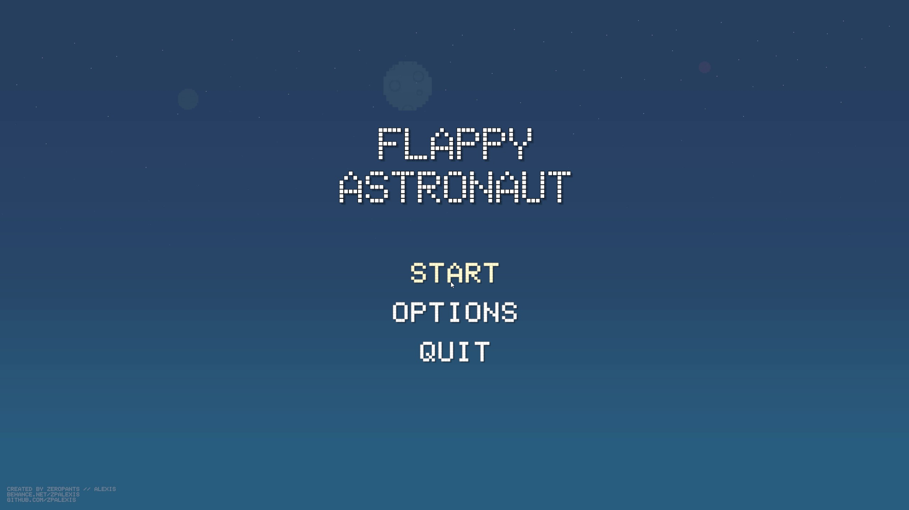
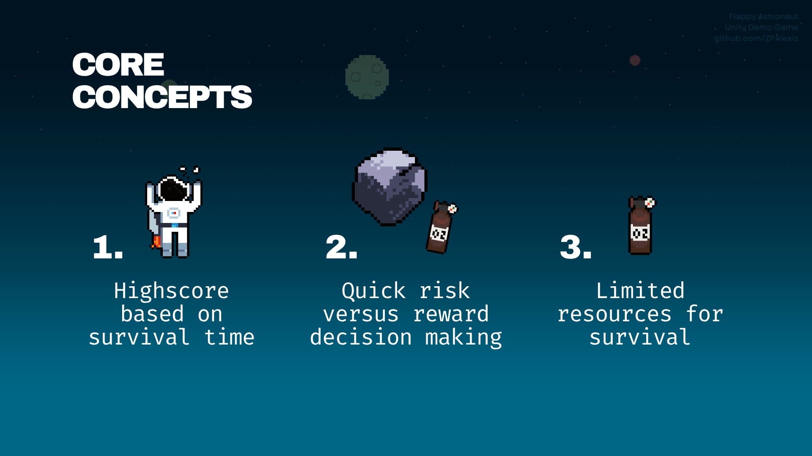
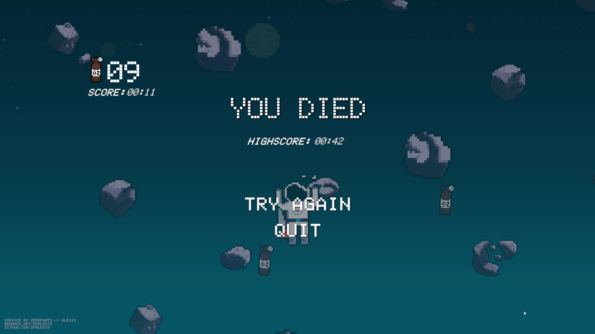
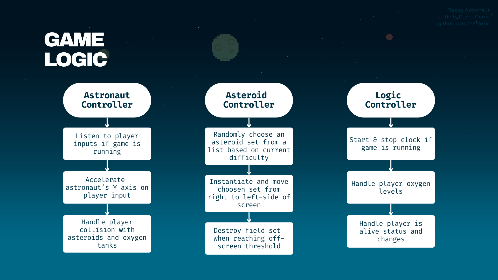
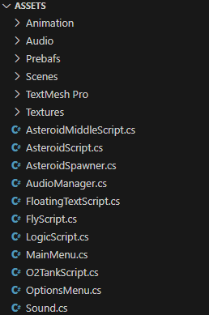
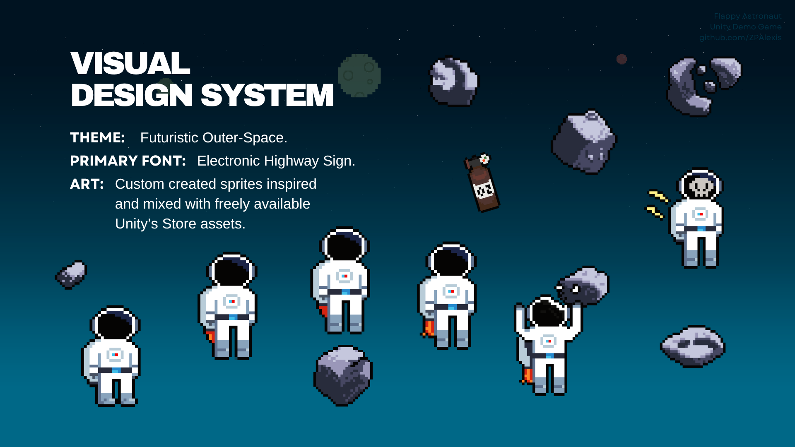
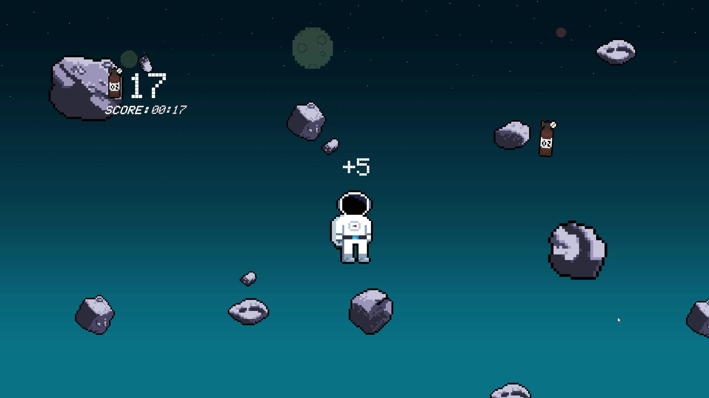

Flappy Astronaut
Category: Demo Unity Game
Tech Stack: C#, Unity
Inspiration: Flappy Bird
Index:
Objective
Flappy Astronaut is the first game I ever created. My initial goal when starting this project was simply to learn the basics of game development, but the main objective was to explore the depths of complexities involved in creating a game experience.
It’s often said that game development is hard. But I only truly understood that after trying to create a simple playable prototype with this project. In order to create an experience that is truly memorable there really is a huge amount of effort required to develop the right game mechanics, design a matching user interface, create complementing art assets, collect quality feedback from user testing, and correctly market the product for release.
{kind=link}
The game was inspired by Flappy Bird, a simple game where you must keep a bird in the air while not touching any of the obstacles. The scope was limited on purpose so I could focus on the process and not the end result.
Although Flappy Astronaut’s game design was heavily based on it’s influence, to achieve the goal set out by the project I decided to give the project it’s own twist. The general setting of the game received it’s own outer space environment, art assets, music, and new mechanics that aligned with the new theme.
Core Concepts
{kind=link}
In Flappy Astronaut, the player must guide an astronaut through a field of asteroids while managing their limited supply of oxygen. The end goals is to simply stay alive for as long as possible.
While flying upwards, the astronaut has to dodge waves of incoming asteroids. These rocks are loosely scattered to provide more opportunities for the player to make quick risk-versus-reward decisions.
The astronaut is controlled by the user with the keyboard’s space bar. Every press leads to a jet of upward speed that consumes one oxygen tank. The player starts with 15 oxygen tanks and can quickly run out if not managed correctly. Oxygen tanks are scattered around the asteroid field and have to be strategically collected throughout the journey.
The run ends and the clock stops when the astronaut dies by hitting an asteroid, going below the edges of the screen, or running out of oxygen.
{kind=link}
Tech Stack
Unity
This was my first time using a game engine platform. Unity provided the best and most scalable learning platform for this project given it’s initial objectives.
Unreal Engine and Godot were other two great options I could have used as alternatives, with each using a different architecture and programming language. However, Unity was the only that provided but the decision came down to the C# programming language used specifically in Unity.
C#
The primary programming language used in Unity. This was the perfect opportunity to further develop skills in scripting game logic. C# was a great way to build proper foundations learning the principles of modularity, abstraction, and clean code.
Aseprite
Used to create the pixel art presented in the project’s visual design system. The software is the best alternative to Photoshop when it comes to pixel art, and provides great support for animation with layers & frames as separated concepts.
Game Logic
{kind=link}
The logic diagram is a summarized representation of the controlling scripts attached to Unity’s game objects. The simplicity of the game’s scope helped keep the scripts independent and easy to manage. The main complexity of this project was learning how to put it all together in Unity.
Given the learning objective of this project there was no further efforts to organize or condense the project’s files. This is how the assets structure ended up looking like.
{kind=link}
Here is a simple snippet from the AsteroidScript.cs with the Update function that Unity runs on every frame. It controls a set of asteroid’s horizontal movement and its destruction when reaching the off-screen threshold (deadZone).
Visual Design System
{kind=link}
The goal with the visuals of Flappy Astronaut was to define a theme that could align all elements of the game to a single style. The theme of Futuristic Outer-Space was the perfect solution for the flying mechanics, obstacles, and new oxygen survival mechanics.
All project sprites were created using Aseprite, and were inspired or mixed with freely available assets from Unity's Asset Store
Demo & Download
Download the demo and try it yourself!
Learnings
{kind=link}
This project was the perfect starting point to uncover the potential paths ahead for game development. It showed the possibilities of an engine like Unity, and highlighted the complexities involved in planning, building, and delivering a game experience.
Here are the most significant learnings and insights from this project:
- Game development is hard - I knew this before starting, but it’s only with practice that we really understand the implication of those words. A quick demo game can be easy to put together, but delivering a properly polished experience can be extremely complex and takes time.
- Unity Engine is really flexible - My biggest surprise was on how easy-to-use and versatile this engine is. I could easily convert the application into an HTML element or a mobile app for both iOS and Android if the project were to evolve in that direction.
- Visual identity goes a long way - Giving the project a design theme really helped to add quality to the end result without much further complexity. The next steps would have been to add better animations and variety to the stage and player interactions.
- Depth and variety of mechanics - Flappy Astronaut had clear boundaries with simple game mechanics and objectives. However, if this project were to evolve beyond just a prototype demo, it would need a variety of additional player challenges, a clearer and more rewarding end-goal, better feedback animations, more stage variations, and difficulty customizations.
- Coding fundamentals - C# provided a great opportunity to revisit and build better coding foundations. Being a Object-Oriented Programming (OOP) language, it provided a good refresher on the principles of modularity, abstraction, and clean code.
Thank you for checking out this project!